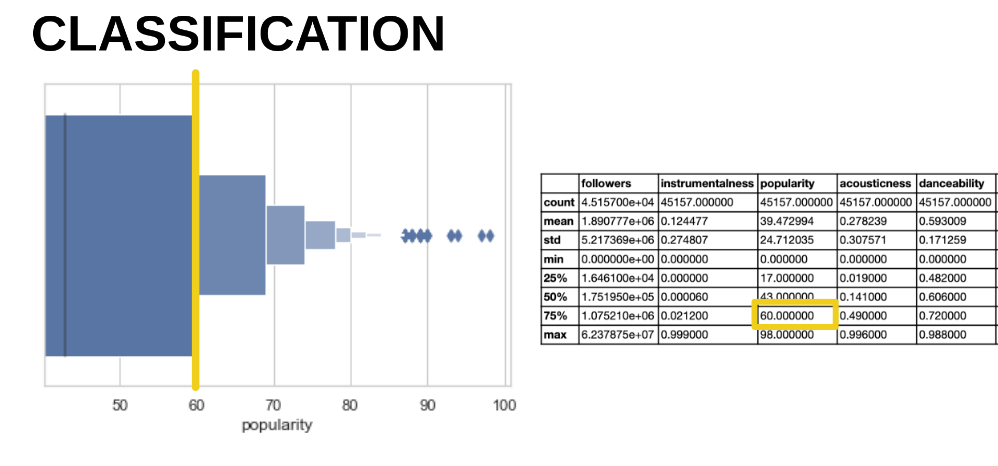

This is, quite literally, the million-dollar question.
This project has the objective to predict a song’s Spotify popularity based on audio features from the Spotify database and song popularity measured by the number of followers.
We used regression and classification models to answer some of these questions:
Looking at the distributions of each feature, there is no clear correlation between the popularity of a song, and other features. The only features that show some correlation are Loudness, Acousticness Energy and Followers.
To get a better sense of how the features are correlated, we created different plots. The most significant one is the one is Energy vs. Loudness by Acousticness, While other plots, as you notice from the image below, are not really meaningful.
To improve the understanding of the overall distribution of these features, we created different visualizations as follows.
Followers vs. popularity – the more popular the song, the more followers it has.
On the other hand, we would expect, the danceability of the song to have a correlation to its popularity, but it is not happening.
Instrumentaliness vs. popularity, instead, shows that the less instrumental the song is, the more popular it becomes.
Our target variable is popularity, which has a value from 0 to 100, with 100 being the most popular. Spotify's "Popularity" Score is calculated by algorithm and is based, in the most part, on the total number of plays the track has had and how recent those plays are. We used classification algorithms to predict whether a song will be popular or not. We used historical data to train the model and built a prediction model by regression. The 3 models we used are: Linesr Regression, OLS Regression and Classification Model.
The first model we ran is the linear regression. We separated the variables into x and y:
We also run an OLS regression and got the same R2 of 22%.
We can see here that variables like danceability, instrumentalness, liveness have the highest coefficient which shows how this variable is highly correlated with the popularity
We can also see here the p-value, where valuables like mode and key show that are not statistically significant.
On the top, we can also see the F-statistic, which is a large number, so this represents that our data has a higher dispersion.
At the right, we see the Root Mean Square Error (RMSE), which is the square root of the variance of the residuals. It indicates the absolute fit of the model to the data, meaning that how close the real values are to the model’s predicted values.
We were hoping to get better regression results trying several tests, but we could not improve the results.
We changed the continuous variable of popularity that is from 0 to 100 and have two sets, one from zero to 60 and other from 60 to 100. Form 0 to 60, we called it not popular, and over 60 popular. We tried the four models listed below and found out that Random Forest Classifier and decision tree classifier were the best. We were not expecting to see such strong AUC numbers closer to 88.
